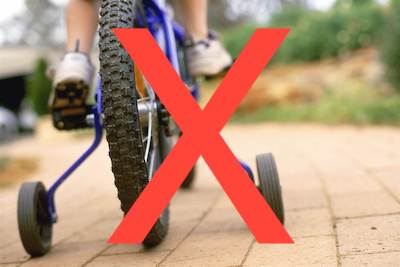

Visualization Basics
Complete in Class
Mammalian sleep dataset: msleep
- Description of dataset
- From V. M. Savage and G. B. West. A quantitative, theoretical framework for understanding mammalian sleep. Proceedings of the National Academy of Sciences, 104 (3):1051-1056, 2007.
Instructions:
Download the R Markdown file below, insert your code where indicated, submit the .md and .html files for your activity in Blackboard.
- msleep.Rmd
- msleep_solutions.html (for reference only—finished plots with no code!)
ggplot2 resources
Don’t bother with the
qplot()function. It’s a bare-bones, training wheels version of theggplot()function that provides fewer options. It’s much less useful and not much easier to use, so I recommend never to use it.
